YFCC100M mixtures
(Excerpt from video uploaded by nikunoki, licensed CC BY 2.0.)
| Mixture |

Power = -27.73 dB |
|||||||
|---|---|---|---|---|---|---|---|---|
| Ground-truth sources |

Power = -27.73 dB |

Power = -50.00 dB |

Power = -50.00 dB |

Power = -50.00 dB |

Power = -50.00 dB |

Power = -50.00 dB |

Power = -50.00 dB |

Power = -50.00 dB |
| Method | Separated source 0 | Separated source 1 | Separated source 2 | Separated source 3 | Separated source 4 | Separated source 5 | Separated source 6 | Separated source 7 |
| Sup FUSS p_0=0.2 |

Power = -27.96 dB |

Power = -44.11 dB |
Power = -46.94 dB |
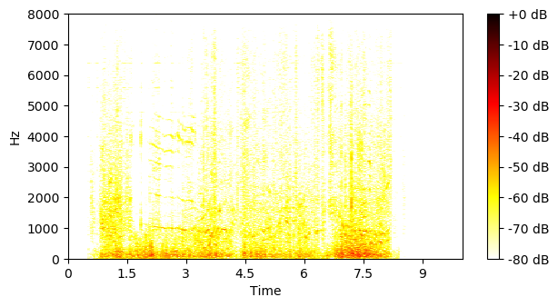
Power = -48.99 dB |
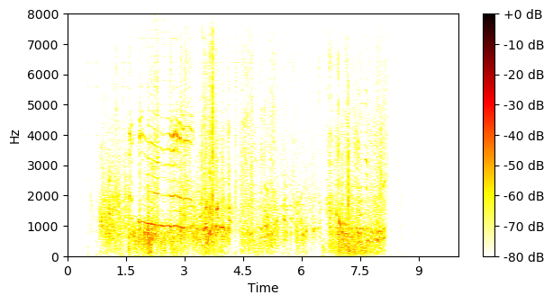
Power = -49.33 dB |
Power = -49.48 dB |

Power = -49.69 dB |
Power = -49.90 dB |
| Sup FUSS p_0=0.2 unsup YFCC100M |
Power = -28.36 dB |
Power = -44.75 dB |
Power = -47.33 dB |
Power = -48.23 dB |
Power = -48.55 dB |
Power = -48.65 dB |
Power = -49.03 dB |
Power = -49.71 dB |
| Unsup YFCC100M |
Power = -32.93 dB |
Power = -33.67 dB |
Power = -43.76 dB |
Power = -43.83 dB |

Power = -47.15 dB |
Power = -49.33 dB |
Power = -49.35 dB |
Power = -49.70 dB |
(Excerpt from video uploaded by USM MS photos, licensed CC BY 2.0.)
| Mixture |

Power = -21.08 dB |
|||||||
|---|---|---|---|---|---|---|---|---|
| Ground-truth sources |

Power = -21.08 dB |

Power = -50.00 dB |

Power = -50.00 dB |

Power = -50.00 dB |

Power = -50.00 dB |

Power = -50.00 dB |

Power = -50.00 dB |

Power = -50.00 dB |
| Method | Separated source 0 | Separated source 1 | Separated source 2 | Separated source 3 | Separated source 4 | Separated source 5 | Separated source 6 | Separated source 7 |
| Sup FUSS p_0=0.2 |

Power = -22.86 dB |

Power = -30.20 dB |

Power = -40.77 dB |

Power = -42.39 dB |

Power = -43.44 dB |
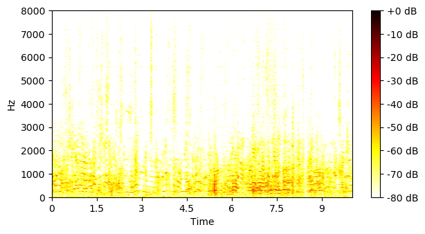
Power = -44.81 dB |

Power = -45.36 dB |
Power = -46.17 dB |
| Sup FUSS p_0=0.2 unsup YFCC100M |
Power = -26.57 dB |
Power = -31.49 dB |
Power = -35.95 dB |
Power = -36.40 dB |
Power = -36.77 dB |
Power = -41.31 dB |
Power = -41.37 dB |
Power = -43.82 dB |
| Unsup YFCC100M |
Power = -27.98 dB |
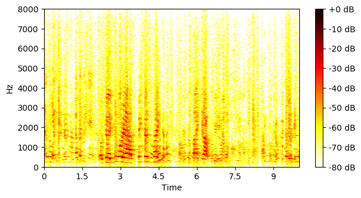
Power = -28.12 dB |
Power = -29.47 dB |
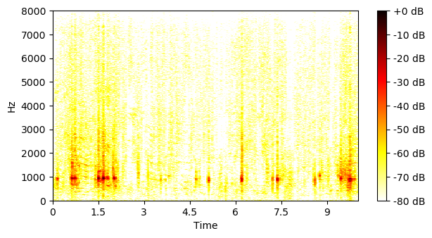
Power = -30.25 dB |
Power = -37.93 dB |
Power = -40.66 dB |
Power = -44.51 dB |
Power = -46.10 dB |
(Excerpt from video uploaded by budawood, licensed CC BY 2.0.)
| Mixture |
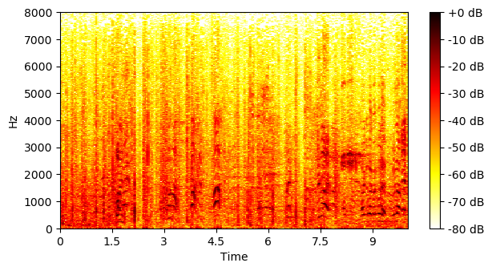
Power = -21.65 dB |
|||||||
|---|---|---|---|---|---|---|---|---|
| Ground-truth sources |

Power = -21.65 dB |

Power = -50.00 dB |

Power = -50.00 dB |

Power = -50.00 dB |

Power = -50.00 dB |

Power = -50.00 dB |

Power = -50.00 dB |

Power = -50.00 dB |
| Method | Separated source 0 | Separated source 1 | Separated source 2 | Separated source 3 | Separated source 4 | Separated source 5 | Separated source 6 | Separated source 7 |
| Sup FUSS p_0=0.2 |
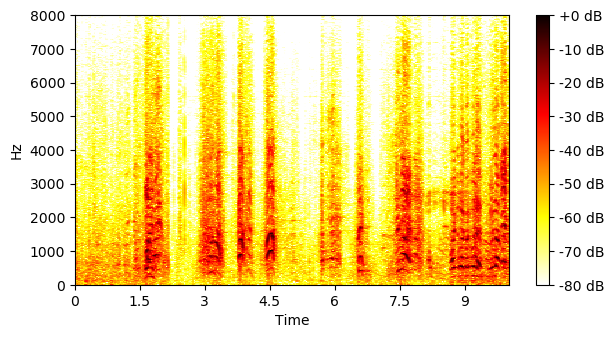
Power = -24.20 dB |
Power = -32.23 dB |

Power = -35.45 dB |

Power = -36.88 dB |
Power = -40.50 dB |
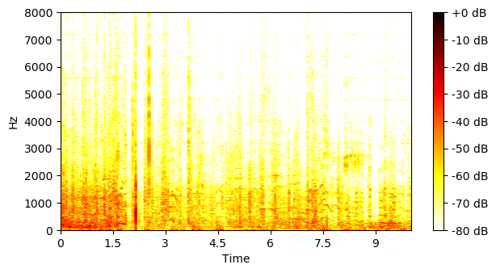
Power = -40.63 dB |
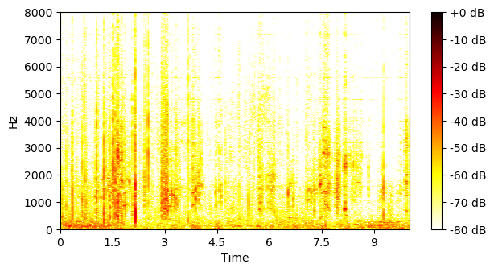
Power = -43.11 dB |
Power = -43.30 dB |
| Sup FUSS p_0=0.2 unsup YFCC100M |
Power = -24.76 dB |
Power = -32.76 dB |
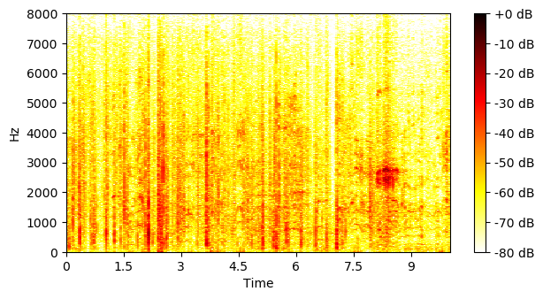
Power = -35.42 dB |
Power = -37.85 dB |
Power = -41.90 dB |
Power = -42.41 dB |
Power = -42.42 dB |
Power = -45.49 dB |
| Unsup YFCC100M |
Power = -27.12 dB |
Power = -29.88 dB |
Power = -32.48 dB |
Power = -33.77 dB |
Power = -34.35 dB |
Power = -38.29 dB |
Power = -41.58 dB |
Power = -43.34 dB |
(Excerpt from video uploaded by oargi, licensed CC BY-SA 2.0.)
| Mixture |
Power = -18.16 dB |
|||||||
|---|---|---|---|---|---|---|---|---|
| Ground-truth sources |

Power = -18.16 dB |

Power = -50.00 dB |

Power = -50.00 dB |
Power = -50.00 dB |

Power = -50.00 dB |

Power = -50.00 dB |

Power = -50.00 dB |

Power = -50.00 dB |
| Method | Separated source 0 | Separated source 1 | Separated source 2 | Separated source 3 | Separated source 4 | Separated source 5 | Separated source 6 | Separated source 7 |
| Sup FUSS p_0=0.2 |
Power = -19.97 dB |
Power = -25.59 dB |
Power = -41.71 dB |
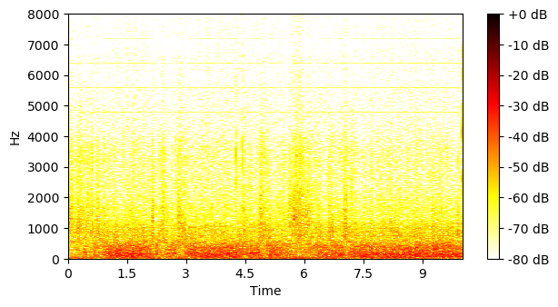
Power = -43.60 dB |
Power = -44.32 dB |
Power = -46.04 dB |
Power = -46.70 dB |
Power = -48.24 dB |
| Sup FUSS p_0=0.2 unsup YFCC100M |
Power = -23.47 dB |
Power = -29.24 dB |
Power = -30.47 dB |
Power = -31.46 dB |

Power = -34.36 dB |
Power = -42.86 dB |
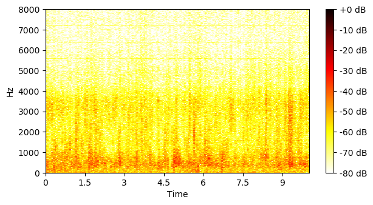
Power = -46.06 dB |
Power = -46.31 dB |
| Unsup YFCC100M |
Power = -23.88 dB |
Power = -28.75 dB |
Power = -29.80 dB |
Power = -31.29 dB |
Power = -40.96 dB |
Power = -43.53 dB |
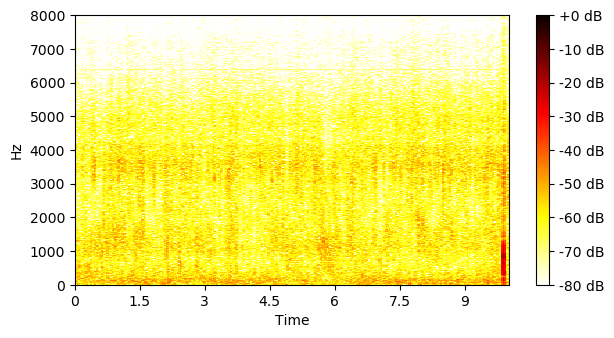
Power = -44.38 dB |
Power = -45.74 dB |
(Excerpt from video uploaded by chunkysalsa, licensed CC BY 2.0.)
| Mixture |

Power = -15.77 dB |
|||||||
|---|---|---|---|---|---|---|---|---|
| Ground-truth sources |
Power = -15.77 dB |

Power = -50.00 dB |

Power = -50.00 dB |

Power = -50.00 dB |

Power = -50.00 dB |

Power = -50.00 dB |

Power = -50.00 dB |

Power = -50.00 dB |
| Method | Separated source 0 | Separated source 1 | Separated source 2 | Separated source 3 | Separated source 4 | Separated source 5 | Separated source 6 | Separated source 7 |
| Sup FUSS p_0=0.2 |
Power = -16.05 dB |
Power = -40.75 dB |
Power = -42.02 dB |
Power = -44.29 dB |
Power = -45.10 dB |
Power = -46.04 dB |
Power = -48.61 dB |
Power = -49.44 dB |
| Sup FUSS p_0=0.2 unsup YFCC100M |
Power = -15.79 dB |
Power = -49.95 dB |
Power = -49.96 dB |
Power = -49.96 dB |
Power = -49.97 dB |
Power = -49.97 dB |
Power = -49.97 dB |
Power = -49.97 dB |
| Unsup YFCC100M |
Power = -24.02 dB |
Power = -26.73 dB |
Power = -28.62 dB |
Power = -28.80 dB |
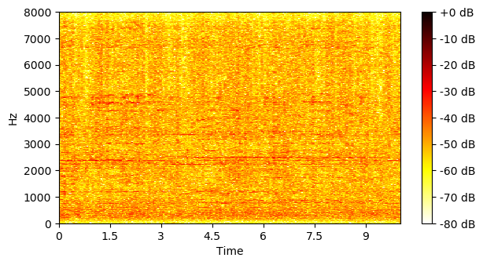
Power = -31.32 dB |
Power = -33.95 dB |
Power = -35.66 dB |
Power = -41.73 dB |